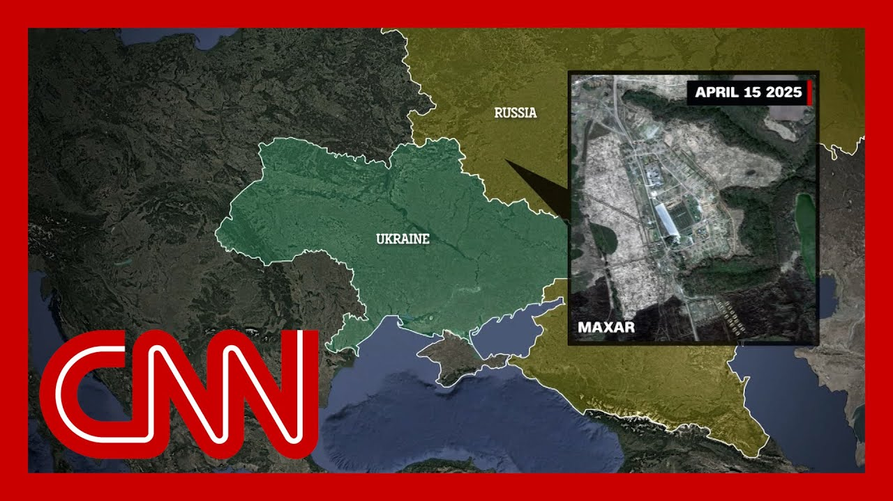

【CNN News 20250703 朝鲜将向俄罗斯增派多达3万名士兵】
Summary: Russia is receiving additional military support from North Korea for its invasion of Ukraine, with up to 30,000 more troops reportedly being sent to reinforce Russian forces.
摘要： 俄罗斯在入侵乌克兰的行动中获得朝鲜的额外军事支持，据报朝鲜将增派多达3万名士兵增援俄军。

⏱️ Estimated Reading Time: 11 min
📚 四级生词 📚 六级生词 📚 雅思生词 📚 托福生词 📚 专八生词 📚 SAT生词 📚 考研生词 📚 GRE生词 📚 高考生词 📚 其它生词生词
Russia is getting yet more help from North Korea in its ongoing invasion of Ukraine.
俄罗斯在持续入侵乌克兰的行动中再次获得朝鲜的援助。
According to Ukrainian intelligence, Pyongyang is sending up to 30,000 more troops to bolster Russian forces along the front lines.
乌克兰情报显示，平壤将增派多达3万名士兵以加强前线俄军力量。
North Korea initially sent some 11,000 troops to Russian territory last year.
朝鲜去年已向俄罗斯领土派遣了约1.1万名士兵。
Officials say thousands of those North Korean fighters were either killed or wounded.
官员称这些朝鲜士兵中有数千人伤亡。
Nick Payton Walsh has the story.
尼克·佩顿·沃尔什带来报道。
They brought near-suicidal, ruthless tactics, the rumblings of a war going global.
他们采用近乎自杀式的残酷战术，战争蔓延的迹象显现。
11,000 North Korean troops helped Russia expel Kiev's soldiers from its border of Kursk.
1.1万名朝鲜士兵协助俄罗斯将基辅军队驱逐出库尔斯克边境。
But that, it seems, is just the start.
但这似乎只是开始。
CNN has learned up to 30,000 more may be headed to the front lines, according to Ukrainian intelligence, for use in a summer offensive.
CNN获悉，乌克兰情报显示多达3万名士兵可能奔赴前线，参与夏季攻势。
With Moscow hungry for manpower and Pyongyang keen to school its troops in brutal trench and drone warfare.
莫斯科急需兵力，而平壤则渴望让士兵学习残酷的堑壕战和无人机作战。
They were first seen here in October, but recently the routes used then could be active again.
他们去年10月首次出现在此，但最近相关路线可能再次启用。
A troop carrying Roputa ship was seen here on May 18, the same type of vessel at the same Russian port used in transports last year, experts said.
专家称，5月18日在此发现一艘运兵的"罗普塔"号船只，与去年使用的同型号船只停靠同一俄罗斯港口。
CNN also assesses Russia will refit transport planes like the ones seen on the tarmac here again in June at North Korea's Sunan airport to move so many North Koreans.
CNN评估认为，俄罗斯将改装运输机，类似6月出现在朝鲜顺安机场停机坪的机型，以运送大批朝鲜士兵。
Likely air or rail will take them across Siberia to the front line.
可能通过空运或铁路经西伯利亚前往前线。
Ten kilometres east of Kursk, this camp has enlarged in recent months.
库尔斯克以东十公里处的营地近几个月有所扩大。
Further evidence of North Korean build-up.
这是朝鲜增兵的进一步证据。
CNN has geolocated to here this six-minute video report from a part-Korean Russian correspondent.
CNN通过定位确认这段六分钟视频报道来自一名俄籍韩裔记者。
The report surfaced 48 hours after the Kremlin's first admission of the North Korean deployment.
该报道在克里姆林宫首次承认朝鲜部署行动的48小时后出现。
They're not only training, but appear to have new long-term bunker accommodation and equipment.
他们不仅接受训练，还配备了新的长期掩体住所和设备。
The tastes of home, red Korean pepper and homemade propaganda.
家乡风味——朝鲜红辣椒和自制宣传品。
It says, revenge for our fallen comrades.
标语写着：为牺牲战友复仇。
This Russian instructor says his new trainees are aged 23 to 27.
这名俄罗斯教官称新学员年龄在23至27岁之间。
And there's a translation sheet to get over the language barrier, which meant the first units operated separately from the Russians.
使用翻译表克服语言障碍，初期部队曾与俄军分开行动。
State media has shown videos of both countries now training together.
官方媒体显示两国士兵现已共同训练。
Here in the same training ground, a Russian shows how to use a shotgun to take down a drone.
同一训练场上，一名俄军演示用霰弹枪击落无人机。
Others practising clearing buildings together.
其他人练习协同清剿建筑物。
More signs are open.
更多迹象公开。
Putin's top presidential adviser, Sergey Shoigu, Visiting Kim Jong-un here for the second time in a fortnight, announcing 1,000 mine clearers and 5,000 military construction workers to rebuild Kursk region.
普京首席顾问绍伊古两周内第二次访朝，宣布将派遣1000名排雷工兵和5000名军事工程人员重建库尔斯克地区。
Perhaps a sign Moscow is indeed short of the manpower it has sent mercilessly into the fight, but also that it is not short on allies who share their ruthless commitment.
这或许表明莫斯科确实缺乏兵力而残酷投入战斗，但也不乏志同道合的盟友。
Nick Paton-Walsh, CNN, London.
CNN尼克·佩顿·沃尔什于伦敦报道。
Joining me now is Vladimir Omelian, Ukraine's former infrastructure minister.
现在连线乌克兰前基础设施部长弗拉基米尔·奥梅利安。
Thanks so much for taking the time.
非常感谢您抽空参加。
Thank you, General, for inviting me.
感谢将军邀请。
And it's a great honor for me to be with you.
深感荣幸。
Given your job as infrastructure minister, you, of course, have great knowledge of the enormous damage to Ukraine from Russian missile and drone strikes throughout the course of this war.
作为前基础设施部长，您深知战争期间俄军导弹和无人机对乌克兰造成的巨大破坏。
What does it mean to Ukraine and its defense for the U.S. to suspend crucial air defense munitions?
美国暂停关键防空弹药供应对乌克兰国防意味着什么？
Definitely, we were very much frustrated from today's news from Washington, regardless of the attempt of State Department to correct them and to say that, look, it's not about the total postponement, but it's kind of only one element of all supplies.
我们对今日华盛顿的消息深感沮丧，尽管国务院试图澄清称并非全面推迟，只是部分物资。
It sounded very bad for us.
这对我们非常不利。
And those news were welcomed by Kremlin to the greatest extent.
克里姆林宫对此消息极为欢迎。
They are happy and closing to such decision of Pentagon.
他们为五角大楼这一决定感到高兴。
I do hope that President of United States will do everything possible to correct the situation because exactly what Russia waits from the West, that West is in chaos, West is not organized, West is weak, and Russia will be allowed to occupy Europe together with China.
我衷心希望美国总统能全力纠正局势，因为这正是俄罗斯期待的西方混乱、软弱局面，使其能联合中国占领欧洲。
This is the second time the U.S. has suspended arms assistance to Ukraine.
这是美国第二次暂停对乌军援。
Of course, you had the suspension of intelligence sharing a number of weeks ago.
数周前还暂停了情报共享。
It has applied no new pressure on Russia.
这未对俄罗斯施加新压力。
President Trump has threatened sanctions, never delivered new sanctions on Russia.
特朗普总统曾威胁制裁，却未对俄实施新制裁。
In your view, is President Trump favoring Russia over Ukraine?
您认为特朗普总统亲俄甚于亲乌吗？
Is it being harder on Ukraine than Russia?
他对乌克兰比俄罗斯更苛刻吗？
I don't want to be negative in this situation because I still believe that Trump is the president of United States, the leader of the world, and he cannot favor Putin, massacre and murder, and Kremlin, which is the only goal, is to conquer the West and to put their own not democratic rules and to rule Europe.
我不愿消极看待，仍相信作为美国总统和世界领袖的特朗普不会偏袒普京及其屠杀行为，克里姆林宫的目标是征服西方，用非民主规则统治欧洲。
I still hope that there is some kind of game behind, as well as it was done by George Bush during the collapse of Soviet Union when he was cherishing and hugging Gorbachev and asking Ukrainians to keep Soviet Union alive while watching that it's close to collapse.
我仍希望背后有战略考量，如同老布什在苏联解体时表面拥抱戈尔巴乔夫，要求乌克兰维持苏联，实则静观其崩溃。
So maybe it's a wishful thinking, but I would like to think in this direction.
或许是一厢情愿，但我愿如此设想。
And if truth is different, that Trump still believes that his best friend is Putin, leader of Northern Korea and China, we are all in big trouble.
若真相相反，特朗普仍视普京、朝鲜和中国领导人为挚友，那我们都将陷入大麻烦。
Can Europe come to Ukraine's aid now and at least temporarily make up for the loss of U.S. weapons?
欧洲现在能否援助乌克兰，至少暂时弥补美国武器缺口？
Paraphrasing the NATO secretary general, I would like to state the same, that we all aware that daddy left home and we need some time to get mature.
引用北约秘书长的话：我们都知道"父亲离家"，需要时间成长。
And it all depends how much time do we get to be ready for self-defense.
这取决于我们有多少时间准备自卫。
Right now Europe is very much concerned about Russian threat.
当前欧洲高度关注俄罗斯威胁。
They finally realize that it's real, not inside of their capitals and Germany is not fighting back physically Russian invasion yet, but it may happen very soon.
他们终于意识到威胁真实存在，虽尚未在其首都爆发，德国尚未武力反击俄军入侵，但可能很快发生。
At least in Great Britain, they are very much concerned and put all efforts to strengthen their army to provide support to Ukraine to extend needed.
至少英国非常重视，全力加强军力以提供乌克兰所需支持。
Because London definitely realizes that it's much better to stop Russia in Ukraine than do it once again in Dunkirk.
因伦敦深知在乌克兰阻击俄罗斯远胜于在敦刻尔克重演。
That discussion, the idea that Russia might attack Europe or NATO next, I hear it a lot in Europe, particularly Eastern Europe, certainly from Ukraine.
关于俄罗斯可能下一步攻击欧洲或北约的讨论，我在欧洲特别是东欧和乌克兰常听闻。
In America still, it is seen as an exaggeration or a distant threat.
在美国仍被视为夸大或遥远威胁。
Giving an opportunity here to speak to Americans, how seriously should they take the threat from Russia to Europe and beyond?
借此机会向美国民众呼吁：他们应多重视俄罗斯对欧洲及以外的威胁？
By 2014, before first Russian invasion, I would say that if you ask average Ukrainian, he will always reply to you that look, we are confident Russia is friend of us, not an enemy of us.
2014年俄首次入侵前，普通乌克兰人会坚信俄罗斯是友非敌。
Reality changed radically.
现实彻底改变。
Unfortunately we overslept the invasion of Russia into Georgia in 2008.
不幸的是，我们忽视了2008年俄入侵格鲁吉亚。
We thought it was kind of misunderstanding or something different.
当时以为是误会或其他原因。
Many politicians in the West would like to take situation in Ukraine.
如今许多西方政客仍以同样态度看待乌克兰局势。
It's also the big misunderstanding.
这也是重大误解。
And it's a great wish of Russia that we occupy Ukraine, put bad business as usual, then concentrate our forces and strike West.
俄罗斯希望占领乌克兰后照常行事，然后集中力量打击西方。
Definitely United States are far away and divided by the ocean.
美国远隔重洋。
But in nowadays world, you cannot feel secure even if ocean lies between you and the enemy.
但在当今世界，海洋也无法确保安全。
There are too many attempts of hybrid war to strike your state from the inside.
混合战争可能从内部摧毁国家。
So my pure dream and sincere dream is that we keep our strategic relationship with United States, that Washington takes the situation seriously.
我真诚希望维持与美国的战略关系，希望华盛顿认真对待局势。
And we did with Russia what recently was done to Iran.
希望像最近对伊朗那样对付俄罗斯。
We can spend years for talks or for fights, or we can end the story of Red Army with two weeks of combat jets hitting Red Army lines and supplies.
我们可以用数年谈判或战斗，也可以用两周战机轰炸终结红军。